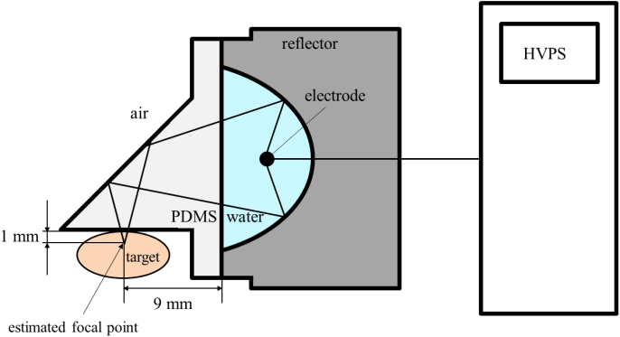
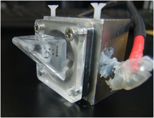

|
衝撃波医療のための膨張波発生装置の開発 背景 衝撃波が生体軟組織に及ぼす影響に関しては，虚血部位における毛細血管数および血流の増加が確認されている。また，衝撃波による細胞の増殖制御の可能性が示唆されている。これらの具体的なメカニズムは解明されていないが，衝撃波の反射によって発生する「膨張波」が重要な役割を担うと考えられている。 衝撃波が媒質中の一点を通ったとき，その点の圧力が基準より高くなるものを圧縮波，低くなるものを膨張波とよぶ。生体組織内部でも衝撃波の反射により膨張波が発生すると考えられる。 膨張波発生装置の原理 異なる音響インピーダンスを持つ媒質が接しているとき，この界面に音波が当たると一部は透過し，一部は反射する。音圧の反射率は
となる。ここで入射波の音圧をpr，反射波の音圧をpiとし，入射側の媒質の音響インピーダンスをz1，透過側の媒質の音響インピーダンスをz2とする。式から，音響インピーダンスが高い媒質から低い媒質へ音波を入射させるときの音圧の反射率は負になることがわかる。このような界面に圧縮波を入射させると，反射波は膨張波になると考えられる。 図１に試作機を示す。試作機は回転楕円対反射鏡および45°の斜面を持つPDMS（SYLGARD®184，Dow Corning Corporation）からなる。第一焦点にて放電により発生した球状衝撃波はまずSUSの回転楕円体反射鏡で反射し，PDMSへと進む。PDMSの音響インピーダンスは水に近いことが知られており，水とPDMSの界面では音波は透過する。その後，PDMS面にて空気と対し，圧縮波は反射して膨張波となる。  図１：膨張波発生装置 膨張波の可視化 流れの全体像を把握するため，シュリーレン法により膨張波を可視化して装置の評価を行なった。シュリーレン法は，流れによる密度変化を屈折率変化による光路変化として得る方法である。衝撃波の撮影には高速度ビデオカメラ（HPV-2，島津製作所）を使用し，撮影速度は10万fps（1µs/frame），露光時間は0.25µsとした。図２に可視化の結果を示す。初めに反射鏡で反射されていない波である前面波が観察され，その後に反射鏡で集束された集束波(図中白矢印)が見られた。集束点である第二焦点付近を集束波が透過するのは放電後およそ25µsであった。
圧力計測 ハイドロフォンによる第二焦点での音圧計測を行った。充電電圧４kVとして10回計測を行なった結果，
図３：ハイドロフォンにより得られた膨張波波形 結論 本研究では，衝撃波の反射に基づいて膨張波発生装置の提案・開発を行った。反射面には水とPDMSを用いた。光学的可視化と音圧計測による評価を行い，光学的可視化から焦点付近に集束していること，音圧計測から負圧が発生していることが確認された。
Related Papers:
|

|
» TOP » 研究内容 » 基礎医学に役立つ機器開発 » 衝撃波医療のための膨張波発生装置の開発 |